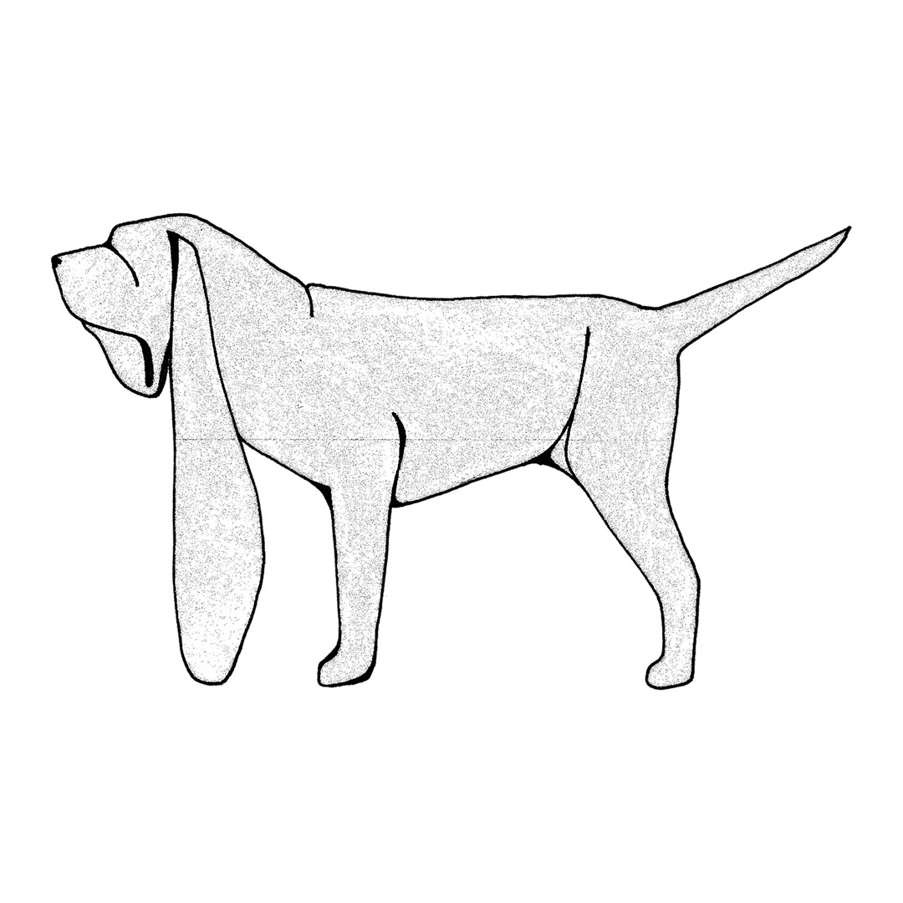
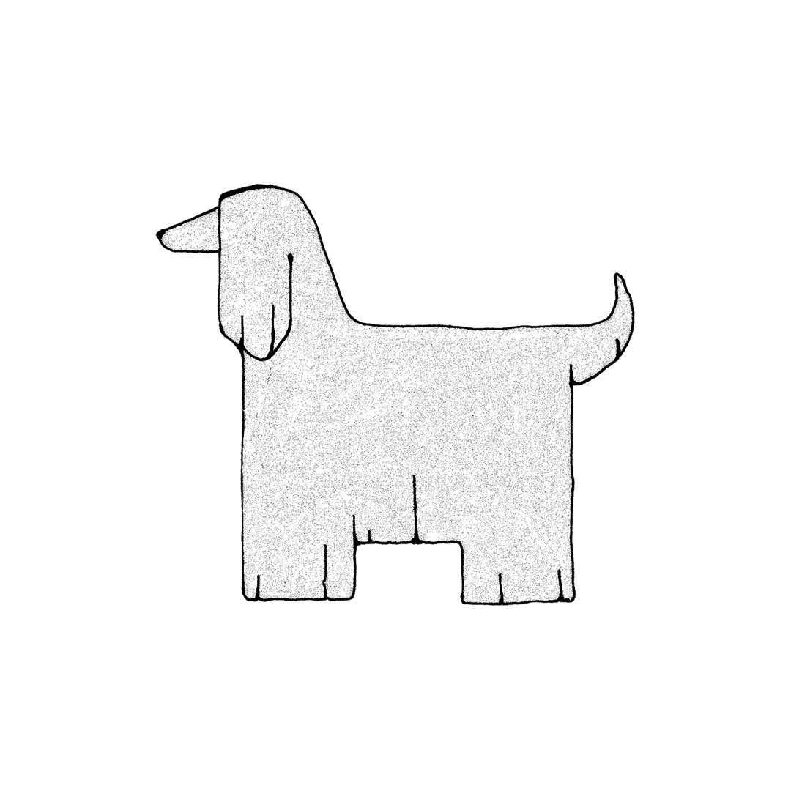
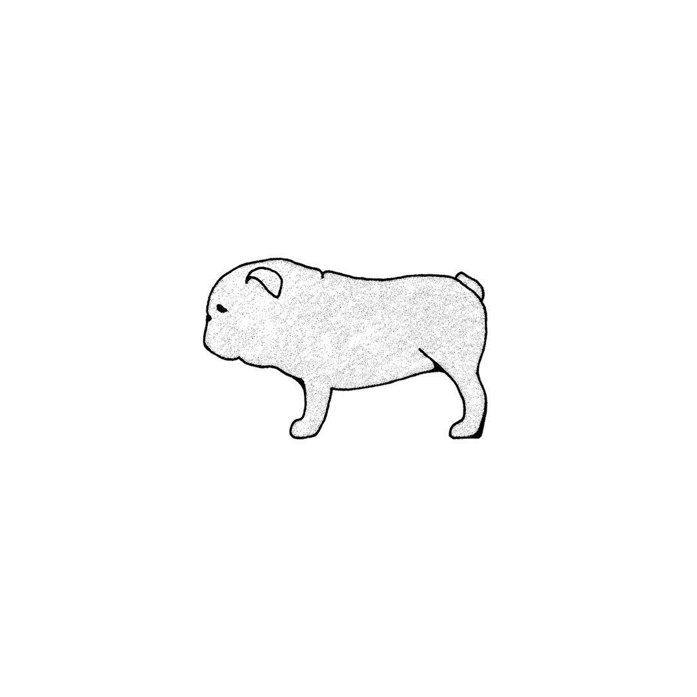
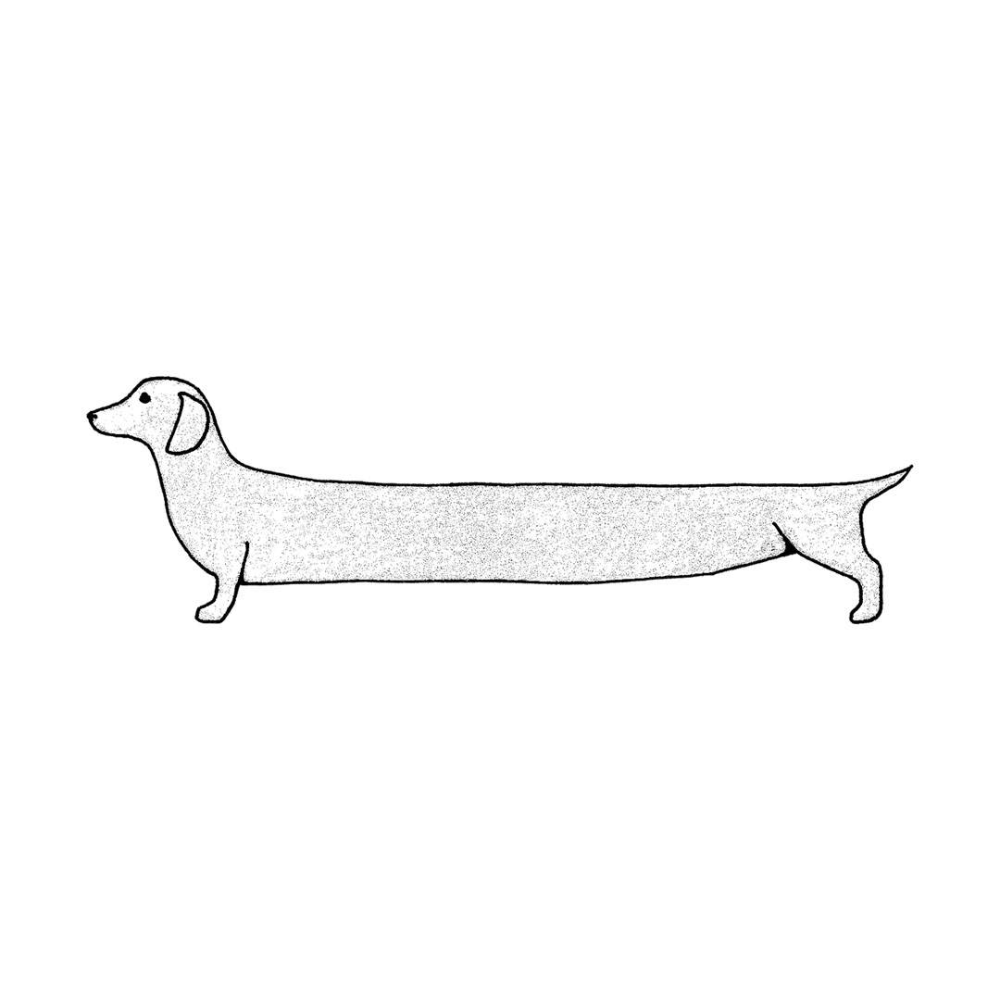
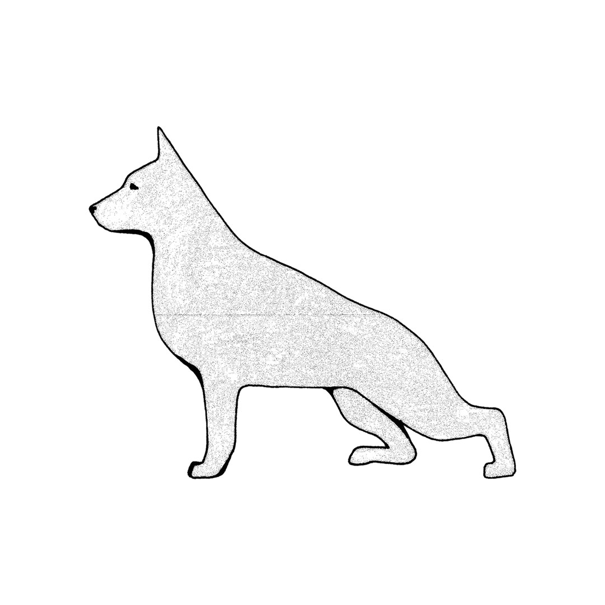

VOM WOLF ZUM DAUERPATIENTEN
ILLUSTRATION / WS2019
Krankheitsfälle bei Hunden durch die Überzüchtung ihrer Rasse häufen sich. Zum einen werden extreme Rassemerkmale angezüchtet, die die Tiere in ihrer Aktivität beeinträchtigen. Zum anderen wird das Risiko von Inzucht und Gendefekten eingegangen, um besonders ausgeprägte Merkmale zu erlangen. Aufgrund dieser Rassemerkmale erfreuen sich viele Hunde an großer Beliebtheit. So verkörpert z.B. die Bulldogge mit ihrem großen Kopf und ihrer platten Schnauze das Kindchenschema. Welche gesundheitlichen Probleme diese Proportionen mit sich führen ist vielen Hundeliebhabern allerdings nicht bekannt.




